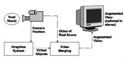
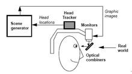
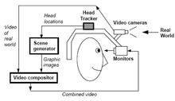

组成形式
一个完整的增强现实系统是由一组紧密联结、实时工作的硬件部件与相关的软件系统协同实现的，常用的有如下三种组成形式。
Monitor-Based
在基于计算机显示器的AR实现方案中，摄像机摄取的真实世界图像输入到计算机中，与计算机图形系统产生的虚拟景象合成，并输出到屏幕显示器。用户从屏幕上看到最终的增强场景图片。它虽然简单，但不能带给用户多少沉浸感。Monitor-Based增强现实系统实现方案如图所示。
光学透视式
头盔式显示器(Head-mounted displays,简称HMD)被广泛应用于虚拟现实系统中，用以增强用户的视觉沉浸感。增强现实技术的研究者们也采用了类似的显示技术，这就是在AR中广泛应用的穿透式HMD。根据具体实现原理又划分为两大类，分别是基于光学原理的穿透式HMD(Optical See-through HMD)和基于视频合成技术的穿透式HMD(Video See-through HMD)。光学透视式增强现实系统实现方案如图所示。
光学透视式增强现实系统具有简单、分辨率高、没有视觉偏差等优点，但它同时也存在着定位精度要求高、延迟匹配难、视野相对较窄和价格高等不足。
视频透视式
视频透视式增强现实系统采用的基于视频合成技术的穿透式HMD(Video See-through HMD)，实现方案如图所示。
AR-interesting，an interesting web
copyright 2016 By Interesting Working Group
Most contents above (photos included) are derived from the Internet.